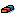
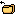
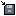

Click one of the tools from the menu on the right side of the screen. Detailed instructions on how to use the tool will show up on the bottom of the screen.
Use the tool by clicking inside the canvas area.
The [Show help] button can be used to show this instructions on the screen again.
List of tools:
Control: Use to pick a shape and edit its colors/position.
Line: Creates a straight line.
Square: Creates a square.
Rectangle: Creates a rectangle.
Polygon: Creates a polygon.
Undo Draw: Deletes last created shape.
Clear: Cleares the screen (WARNING: action cannot be undone).
Load file: Loads canvas from a saved file.
Save current file: Saves current canvas into a file.
Export: Saves current canvas into an image.
Fill color: Changes the color of a shape according to color input.
Show help: Shows this help menu.
Toggle points: Shows/hides all control points.
Refresh object list: Refreshes and shows object list.